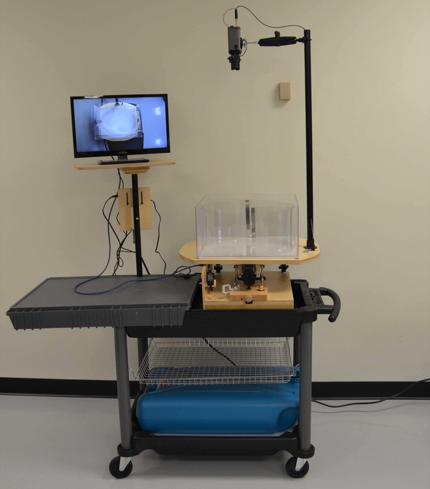
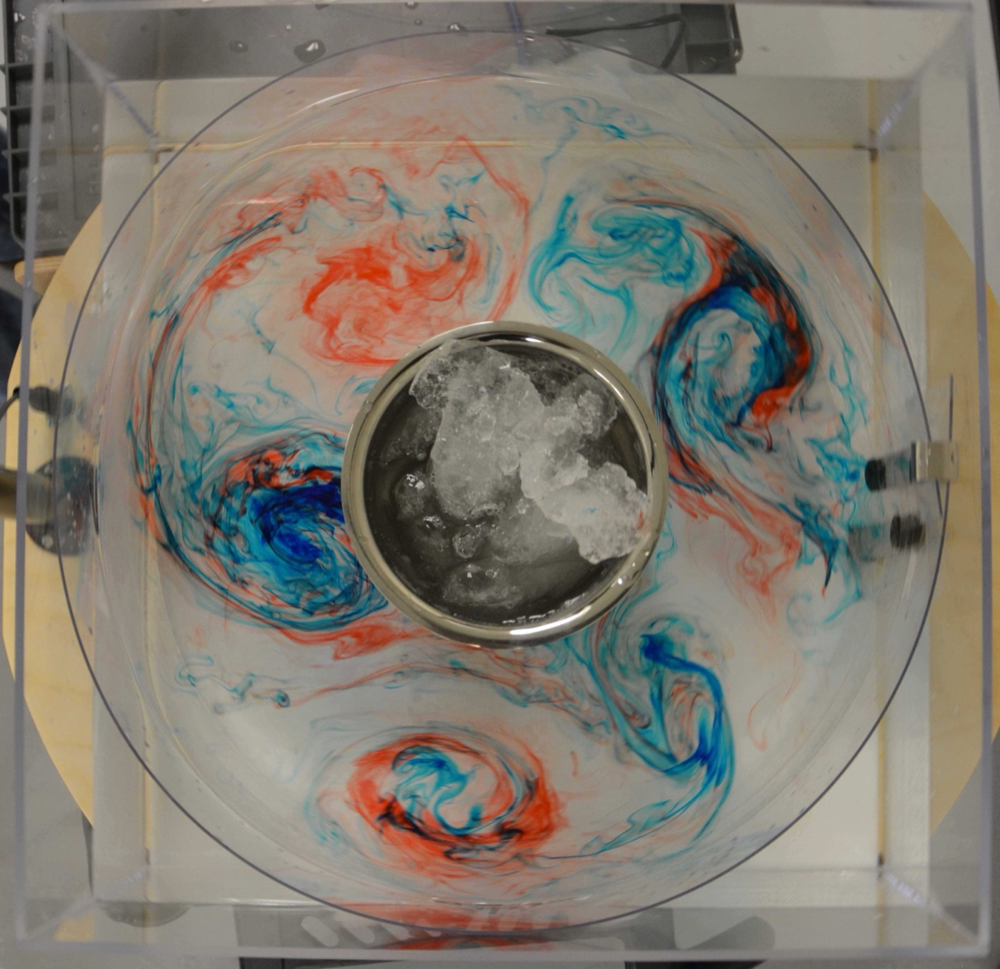
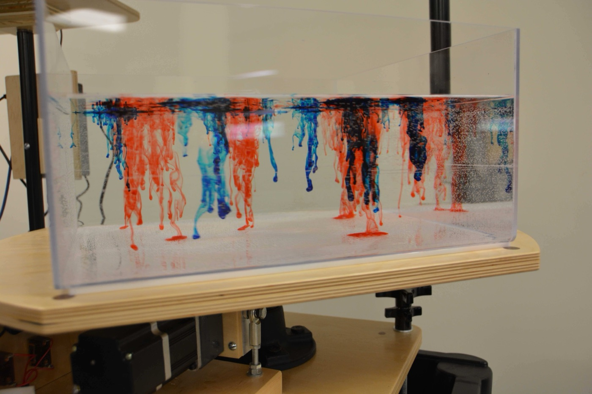
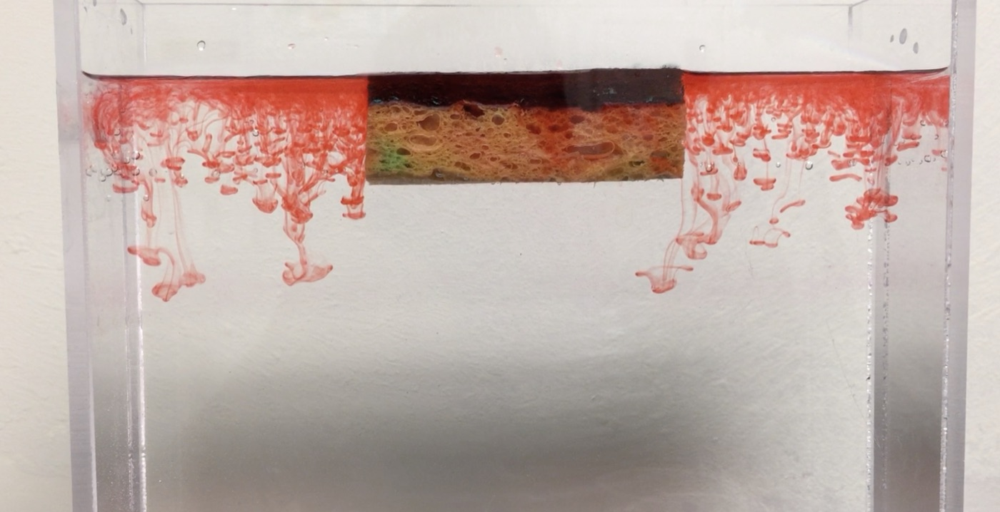

Curiosity-driven
Fun Projects
Small experiments I enjoy for the pleasure of watching fluid physics happen.
Earth in a box: rotating-table experiments
These turntable experiments explore how stratification and rotation shape geophysical flows, including baroclinic instability and Taylor columns. I ran them in the Environmental Fluid Mechanics Laboratory at Colorado State University as a side project during my Ph.D.



A tale of two diffusivities: salt fingers
Salt fingering is a mixing process and an example of double-diffusive instability. It happens when relatively warm, salty water (red) lies over colder, fresher water. Heat diffuses about 100 times faster than salt, so parcels lose their heat but keep their salt, and they sink as thin fingers. I made these in my spare time out of curiosity.
